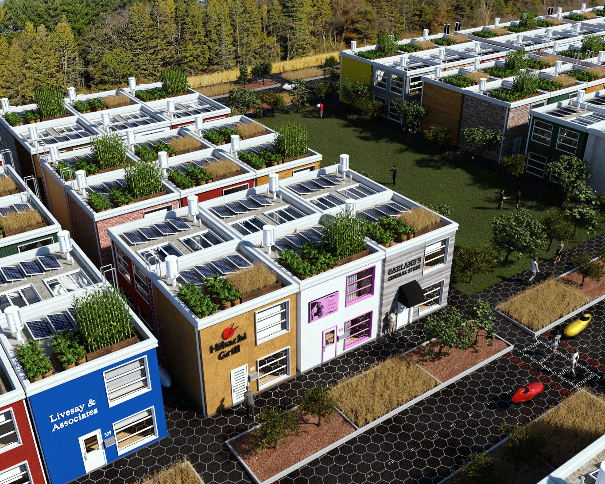
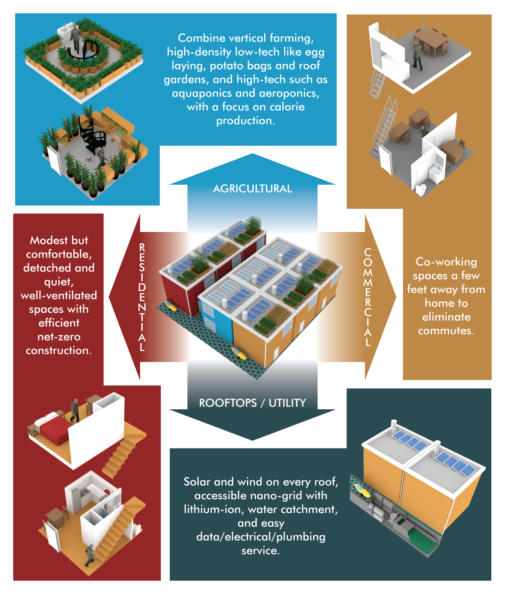
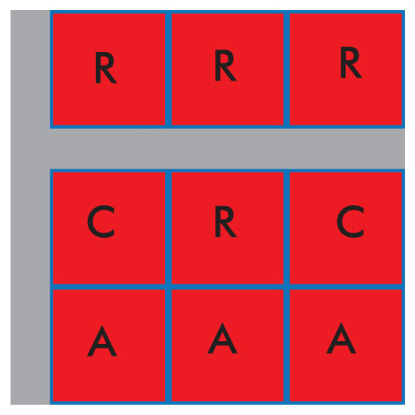

Cloud computing is about horizontally (as opposed to vertically) scaling systems. Instead of building one super-powerful server you create many small inexpensive servers that each contain a small part of the system. There are multiple advantages to "scaling out" rather than "scaling up", such as incrementally improved capacity with little or no downtime and less expensive, more maintainable servers.
Moving our human development and zoning towards a similar horizontal scaling architecture will make achieving our sustainability goals much more practical. Instead of oversize suburban homes in expansive suburbs far from vast agricultural spaces, and a long commute away from large office and industrial areas, let's create smaller self-contained and more tractable units for everything. This will mean smaller homes bundled next door to smaller agricultural and commercial/industrial buildings.


Sustainability means moving away from the infinite growth paradigm towards one where resources are recognized as being finite. One of those key resources for human society is land. In my opinion, land usage in modern suburbia is amazingly bad, and suburban land is one of the most underutilized resources remaining.
Suburban homes have tended recently towards growing larger and larger. This means increasing use of resources for heating and cooling of rooms that usually are mostly empty space. At the same time, anywhere land is not obviously at a premium, homes often have large back yards. These back yards are blank spaces in our sustainability plan. About 95% of the time they are used mainly as a place for the family dog to defecate. 5% of the time a child plays there, and another 5% of the time someone putters in a tiny garden that produces next to nothing. Often back yards are mainly for vanity.
Another tragedy of the modern city is the concept of commuting many miles to work in vehicles that weigh thousands of pounds and are designed to carry many passengers rather than an individual.
More often than not the destination is an office building or a strip mall. In the case of the office worker, telepresence and telecommuting is an obvious and massively underutilized development. The internet is everywhere and is increasingly being used to stream cat videos, gaming, TV shows and other video. Why not use it for video and audio conferencing whenever we need to discuss work topics face-to-face, rather than driving many miles each day? We are wasting gas, wasting our time, wasting space for office buildings that are unoccupied 60-70% of the time.
Most people have heard of the "tiny house" by now. This brilliant idea is one of the shining examples of making sustainable living real. The question for many people, however, is, "where do I park my tiny house?".
The suggestion is often given to be an RV park, or a tiny "homestead" in a remote or unpopulated area. All of the typical answers to the question of where to park a tiny house generally miss the main points. First of all, the primary reason tiny houses have wheels is to get around outdated local laws. So they aren't really recreational vehicles or vehicles at all. As far as moving to an unpopulated area to get around outdated local laws that insist on large homes etc., this is avoiding the problems rather than solving them.
There are some tiny house community developments that are popping up. The main thing missing from these ideas is the concept of mixed land use which is key to scaling society in a predictable and tractable way.
Urban centers maximize density which leads to over-centralization, causing ever-increasing problems in terms of transit, housing, public facilities, and even the availability of light which is a show-stopper for a solar-powered community.
Suburban areas minimize density, leading to ballooning problems with transit, as more and more commuters try to fit onto ever-increasingly crowded freeways, wasting more and more time and fossil fuel to get to and from work or just the grocery store. Home owners compete for the largest homes and the largest back yards, which means they are competing to waste as much space and energy as possible.
The "urban village" is probably the closest to this tiny village proposal in terms of practical sustainable scaling. In a way this takes the urban village concept a step further. One difference is the limitation to two stories.
Goals are to improve food security, land use, as well as energy and resource efficiency, reduce commute times, reduce injury and deaths from vehicle accidents, and overall increase quality of life.
The core idea is to subdivide each residential surburban lot into 9 lots. Given a typical lot size of 60'x60', that means each plot is 18'x18' with two 6' passages.

Mixed-use zoning helps implement the project goals. Each subdivision is required to contain the following zones:
This zoning ensures that each subdivision has a minimum of agricultural space, commercial space, and also encourages people to run businesses out of their homes. Structure height is limited to a maximum of two stories.
Regulations for residential construction can specify passive/efficient requirements such as maximal insulation, airtight construction with HRV, cooling tubes or heat pump, solar, energy storage, greywater recyling, etc. Use of systems like Structural Insulated Panels may lower labor and energy costs.
Separate structures will reduce noise pollution and increase privacy when compared to attached units.
Regulations can specify efficient agricultural methods such as advanced permaculture, aquaponics, aeroponics, hydroponics, and vertical farming.
Ideally several suburban plots together are each subdivided. For example, to start small, suppose six homes at one end of a street convert. What was originally just 6 large residences becomes 24 tiny homes(/businesses), 18 agricultural spaces, and 12 commercial spaces, for a total of 54 spaces. Land use is improved by 800%.
This part of the street is barricaded to prevent normal vehicle traffic from entering.
To improve safety and reduce noise pollution in village areas:
There will need to be a certain amount of open space, which can also partly serve for additional agriculture. So for say each 4 tiny villages/plots there could be a tiny park the size of one 60x60 plot. Here is an idea for a 'tiny park' layout:
F: dwarf fruit tree a:alfalfa
N: dwarf nut tree g: grass
x: goat HH: goat house
k: goat kid =||: goat run
FaNaFaNaFaN
a=========a
N||aggga||F
a||ggggg|xa
F||ggggg|kN
a||gggggHHa
N||aggga||F
a=========a
FaNaFaNaFaN
Roads can be solar roadways and narrowed a bit since most vehicles are single-passenger. Along the sides of all roads should be alternating dwarf fruit trees, wheat, and dwarf nut trees with about 20 feet for each section.
Example overall layout of each neighborhood:
w: wilderness corridor (undeveloped, no people)
p: tiny park -|: solar roadway
v: tiny village
-----------
wwwwwwwwwww
wwwwwwwwwww
wwwwwwwwwww
wwwwwwwwwww
wwwwwwwwwww
wwwwwwwwwww
-----------
vvvvpvvvvp|
-----------
vvvvpvvvvp|
-----------
vvvvpvvvvp|
-----------
vvvvpvvvvp|
-----------
vvvvpvvvvp|
-----------
vvvvpvvvvp|
-----------
vvvvpvvvvp|
-----------
vvvvpvvvvp|
-----------
Tiny Village concepts by Jason Livesay. Design, 3D modeling, animation and illustration by Jay Engstrom.
Please feel free to contribute or fork on github.